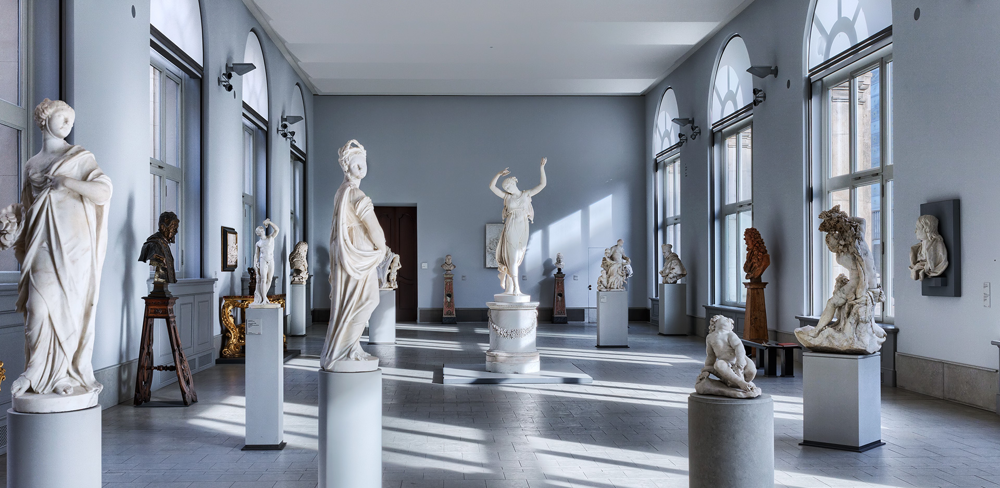
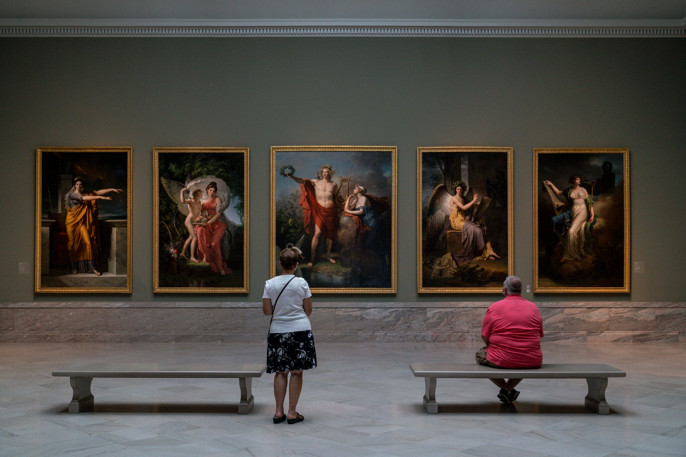

Current Exhibitions
Digital Dreams: Art in the Age of Algorithms
This exhibition explores how artists are using algorithms, artificial intelligence, and generative tools to create new forms of digital expression. Through interactive displays and dynamic visuals, visitors can see how machines and human creativity work together to produce art that evolves in real time.
Code & Canvas: The Language of Creative Technology
Code & Canvas highlights the ways programming has become a medium for artistic creation. Featuring works by digital artists and designers, the exhibition showcases installations, projections, and interactive pieces that reveal how lines of code can transform into immersive visual experiences.
Interactive Gallery
Browse three concept visuals from MonoMuse’s current season using the gallery controls or your keyboard while focusing the gallery section.



Gallery images use the files uploaded to this project for the exhibition slideshow.
Featured Museum Video
Embedded from YouTube: Museum feature video.